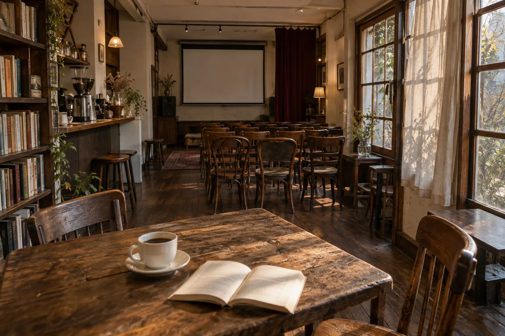
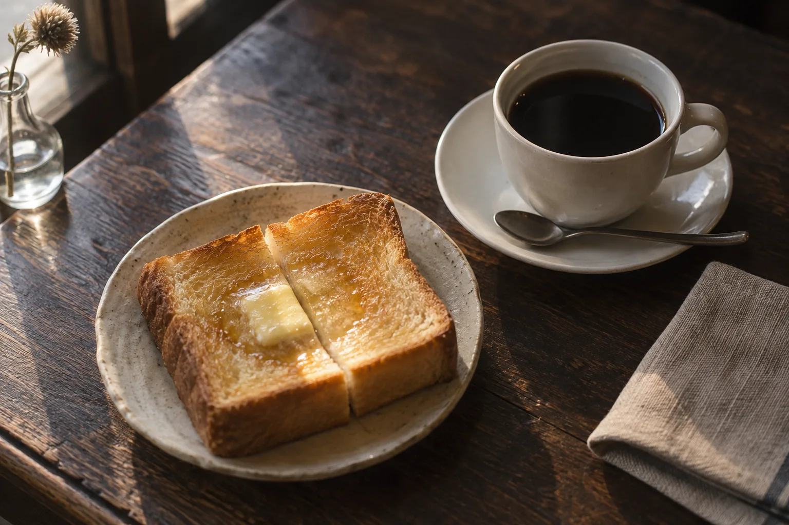

A SMALL CINEMA & COFFEE
映画のあとも、
いい時間。
一本の映画と、淹れたての一杯。
好きなことを持ち寄って集まる、
街の小さなシアター喫茶です。
11月末
開店予定
ただいま、お店づくりの途中です。

開店準備だより11月末のオープンに向けて、準備をはじめました。→
01 / PROGRAM
これからの上映と催し
映画の夜、音楽の日、コーヒーを淹れる朝。
掲載中の催事は企画サンプルです。正式な内容は決まり次第ご案内します。

02 / COFFEE & A LITTLE MORE
喫茶だけの日も、
どうぞ。
映画の感想を話したり、本を開いたり。
予定を決めずに、一杯だけでも。
スクリーンのある喫茶で、思い思いの時間を。
01
好きな映画を、みんなで。
スクリーンを使った上映会やトークに。
02
音楽が近くにある夜。
アコースティックライブや朗読の会に。
03
つくること、伝えること。
小さな展示や、手を動かす教室に。
VISIT US
はじめての方へ
お店はただいま開店準備中です。
扉を開く日を、どうぞお楽しみに。
- 開店予定
- 11月末を予定しています。
- 営業日・時間
- 決まり次第、お店だよりでご案内します。
- 所在地・アクセス
- 店舗情報の確定後に掲載します。
- お問い合わせ
- お問い合わせフォームへ ↗